Git collaborative workflow with ownership
This workflow is designed for a small group of collaborators on a modestly sized project which has clear ownership. Other solutions are better for big projects and production conditions.
Specifically, this workflow assumes that any one task will only be worked on by one person, though others may be consulted for advice and code review. The project owner gets final say when a task is complete and ready to be merged into the main branch.
1 The paradigm
The “owner” of the code project creates the GitHub repo.
Everyone clones the repo
Work to be done is broken down into small, self-contained tasks. As far as possible, avoid having more than one person working on the same function at the same time - this will make merging easier
To work on a code task, create a branch for that one task, and work on that
Make it a habit to check that there haven’t been any changes made to the
mainbranch on Github which contradict itIf changing your code to fit with the new version of
mainis an easy decision, do thatIf it’s not obvious, create a pull request. Other collaborators can give advice, but the project owner should take the lead on the decisions. They may need to work with you to resolve conflicts
When you’ve finished work on your task, check for conflicts and resolve them once more, then create a pull request for your branch to be merged into
main
2 The workflow
2.1 Cloning the repo
When you clone a repo, you can optionally change the name of the local directory to something more meaningful to you:
git clone git@github.com:ownername/repo_name.git local_repo_name
This example uses the ssh authentication syntax because I have found the https authentication to be less reliable. It doesn’t matter which you use.
2.2 Create and work in a new branch
When you start work on a task, never do your work on the main branch. Instead create a task-specific branch with a meaningful name. The examples in this document are going to use branch names like first and second. These would usually be terrible names, but I am using them so that it is clear in which order to make commits to set up the examples I need, so in this one case they are in fact meaningful.
git branch my_task_name
git checkout my_task_name
Push your branch to GitHub so other people know what’s being worked on
git push origin my_task_name
2.3 Adding a new file and working on files
If you create a new file, or you’ve changed more than one file and only want to commit the changes to one of them, add it:
git add my_file
Commit changes often, at least once a day, or when a phase of work is complete, if that’s sooner. Committing more often is fine - whenever you feel you’ve made progress. Commit one file using:
git commit -m "Meaningful commit message" my_file
Or, if you want to commit every file that you’ve made a change to, use:
git commit -a -m "Meaningful commit message"
If you don’t want to use -m "message", git will open a text editor (on my machine that’s vi) and you can type your message in that. If you find yourself in vi and you’re not a vi user, don’t panic. Type i (for insert) before the text you want to type, and ESCAPE :wq! to save and exit. If you messed up, type ESCAPE :q! (the w means write, and the q quit).
When you’re ready, push your branch to GitHub to back up your work and to let collaborators look at your progress. This can be after one commit or several. It’s a good idea to push every time you complete a subtask, but push at least every day you do reasonable amounts of work, since GitHub is also your backup service.
git push origin my_task_name
3 Checking for conflicts
While you’ve been working, someone else may have completed a code task and their code may have been merged into main. It’s a good idea to check for conflicts when:
You notice this has happened, for example on the GitHub repo page or by taking a look at a commit graph (see Section 3.5).
You’ve been working on your code for a long time
You’ve finished your task and want to create a pull request
3.1 Commit everything
Before you check for conflicts, always do a git commit -a. You don’t necessarily need to push, but making sure the last commits are pushed before you do a merge or rebase is good practice.
3.2 Check for changes to main
To make any comparisons with the version of main on GitHub, you first need to fetch a copy of it to your local repository. This won’t affect what you’re working on.
git fetch origin main
You can’t specify a comparison branch with git status, so you first need to checkout your local main:
git checkout main
When you do this, git status will automatically be run. You might see something like this, if changes have been made to origin/main.
On branch main
Your branch is behind 'origin/main' by 3 commits, and can be fast-forwarded.
(use "git pull" to update your local branch)
nothing to commit, working tree cleanDo not take its advice and use git pull. This is a combination of git fetch and git merge, and while you might indeed end up merging, a more considered decision is called for (see Section 5).
You can run git status again at any point, but remember that it is working against your local fetched version of origin/main, so remember to update that too.
3.3 Check for conflicts between local main and origin/main
If you haven’t already done this, fetch a copy of main, that doesn’t overwrite your local copy:
git fetch origin main
Now compare your local version of main:
git diff origin/main main
If there are no differences, you will see nothing. If there are, it will look something like one of the examples in Section 4.
Note: this has the same effect as git diff origin/main..main, if you are more familiar with that syntax. Both show the differences between the most recent commits on origin/main and main. If you want to see all the changes to the origin/main branch since your main was started, you can use git diff origin/main...main.
3.4 Check for conflicts between your working branch and origin/main
If you haven’t already done this, fetch a copy of main, that doesn’t overwrite your local copy:
git fetch origin main
Display the changes which would be made to the version in origin/main if you overwrote it with the version in my_task_name
git diff origin/main my_task_name
Warning! If you do this without having done a git fetch, it will only show the differences between my_branch_name and the version of main in your local repo
Look at the conflicts for each file. Section 4 explains the output.
3.5 Looking at branch structure
A commit graph is a nice way to get an overview of how the branches on your repo interact. This can show you whether you are working with the current version of main (but always back this up with a git diff for rigour). It can also show you whether somebody has made a branch from your branch. This is important because their branch could be affected by how you choose to update the version of main you are working on in your branch. There are a few different ways to look at these.
GitHub has a rudimentary network graph - select the repository’s Insights tab, and then Network in the menu on the left, to see something like:
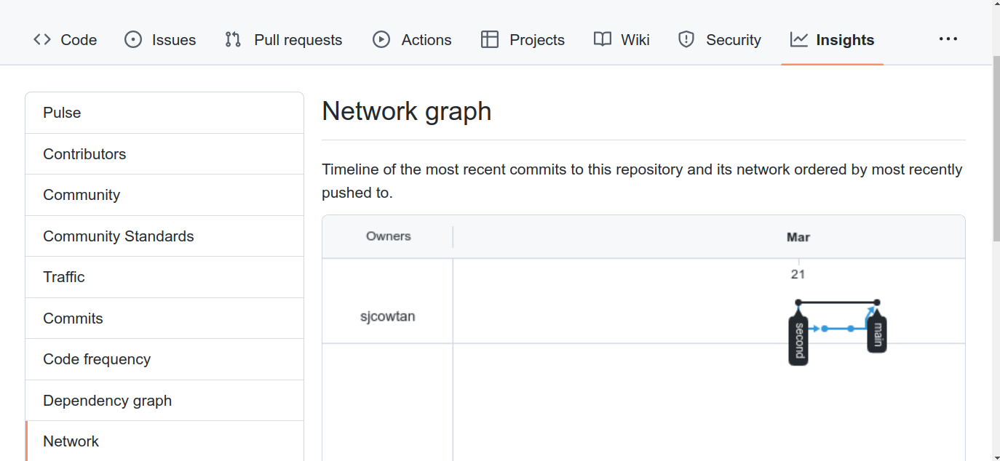
Sadly zooming in doesn’t make this any more readable.
If you use VSCode as your coding API, there are a couple of extensions that produce rather nicer graphs. Firstly GitLens, which is a pretty powerful git interface, has an option in the command panel GitLens+: Show commit graph. The background does not have to be purple!
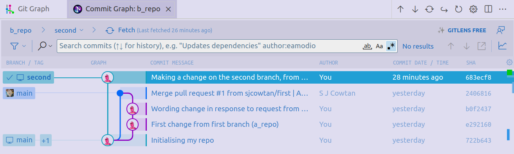
And my personal favourite for readability, Git Graph, accessed via a little button on the bottom left of your VSCode workspace:
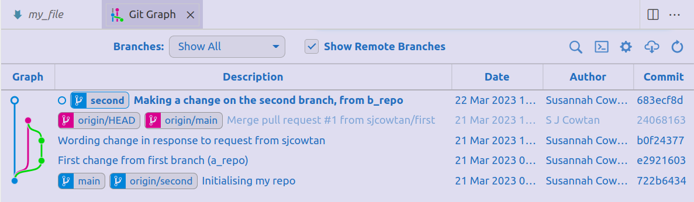
I am not currently aware of an equivalent for RStudio.
4 Interpreting git diff output
4.1 Additions but no deletions
The output will look something like this, if a file named my_file has the only changes:
diff --git a/my_file b/my_file
index 02d5941..e0955ee 100644
--- a/my_file
+++ b/my_file
@@ -1,3 +1,4 @@
This is a test file for demonstrating a GitHub workflow.
It is very boring indeed.
+I'm making a change to it from the first branch in a_repo.Here I have added one line (prefixed by +) to the unchanged lines (no prefix).
4.2 Both additions and deletions
In this example I have made a pull request and the change from the first branch has been merged into origin/main. The second branch was branched from their local main before this merge was made, so the new line added on branch second would overwrite the change made via branch first and the merge. The output would look the same if on the second branch I had been using the current version of main, but deleted that line and replaced it with the new one.
diff --git a/my_file b/my_file
index d5949ad..8f0b080 100644
--- a/my_file
+++ b/my_file
@@ -1,4 +1,4 @@
This is a test file for demonstrating a GitHub workflow.
It is very boring indeed.
-I made a change to it from the first branch in a_repo.
+I'm making a change to it from the second branch, in b_repoa/test1 refers to the version from the first branch specified in the git diff command, i.e. origin/main, and b/test1 is the local version.
There is 1 line which would be deleted from version a, and 1 line would be added from version b (@@ -1 +1 @@)
The line which would be removed is prefixed with -, and the line to be added is prefixed +.
The commit messages from the new commits on origin/main might help to explain the differences. You van view them using:
git log --oneline main..origin/main
Note that git log --oneline my_branch..origin/main appears to do the exact same thing, only comparing local main with the fetched version of origin/main.
4.3 Someone has made a branch from your branch
This is a potential source of problems for them, since you may have made conflicting changes since their branch was created. Viewing a network graph of the full commit history (Section 3.5) is a good way to check for this.
5 Resolving conflicts
Taking each of the cases in Section 4 in turn:
5.1 Additions but no deletions
Assuming you’ve tested your code properly under a full range of use cases (you are writing and running unit tests, right?) this should present no problems.
If this is just an interim check, carry on working
If you have completed the work on your branch, generate a pull request (see Section 6)
5.2 Both additions and deletions
There are (at least) three possible situations here:
The differences are cosmetic - you’ve changed the wording of some messages, or changed some code to make a graph prettier, without changing what it shows - and all the unit tests pass
The differences change the functionality of the code in expected ways - your bugfix involved rewriting some lines of code, but nobody else has worked on that piece of the code to change its functionality in any way, i.e. your
mainis consistent withorigin/mainin that part of the code and anything it affects. Don’t forget to check the unit tests too!The differences change the functionality in unexpected ways - someone else has been working on the same bit of code or something up/downstream from it in a way that means your change will break theirs, whether that’s the main functionality or unit tests
5.2.1 Cosmetic changes
Open a pull request (Section 6) so that your collaborators, (at minimum the project owner), can approve the changes or give you feedback
5.2.2 Expected changes
5.2.2.1 Your local main matches origin/main
The easy case! Open a pull request (Section 6) so that your collaborators, (at minimum the project owner), can approve the changes or give you feedback.
5.2.2.2 Your local main is behind origin/main
Before you can open a pull request for your changes, you first need to integrate it with the changes to origin/main. Since there are no expected problematic conflicts, that should be relatively easy.
5.2.3 Unexpected changes
Your local main is behind origin/main and someone else has made changes which would be broken or overwritten by your code.
5.3 Someone has made a branch from your branch
They will be able to fix their code as long as:
The code is integrated into
mainusinggit mergeand notgit rebaseThe merge is performed on GitHub, so that the pointers from their branch are updated to point to
main
The first point about using merge not rebase is because when code is rebased onto a new version of main, it rewrites the commit history. New commits with new identifiers are appended to the history of the main branch. Several commits can even be combined into one. This helps to keep a repo with a lot of commits tidy, but if another branch shares part of your branch’s history, it will lose those reference points. Doing a git merge, by contrast, appends merge commits to the history of main, and these contain the same commits with the same identifiers that were present in the original branch.
6 Pull requests
There are two reasons to generate pull requests for your branch
You’ve finished your work, checked for and resolved conflicts, and believe it to be ready to be merged into the
mainbranchYou’ve hit a problem, or have to choose between alternative solutions, and you would welcome your collaborators’ input
6.1 Opening a pull request
When you first created your branch, assuming you did so on the command line, it gave you the URL to create a pull request, for example
https://github.com/sjcowtan/git-workflow-test/pull/new/first
This will get you to the page for a new pull request to merge your branch with main.
If you don’t use this URL, you can still get there, but it takes a little more work. Go to the main GitHub page for the repo, and select the Pull requests tab. You will see something like:
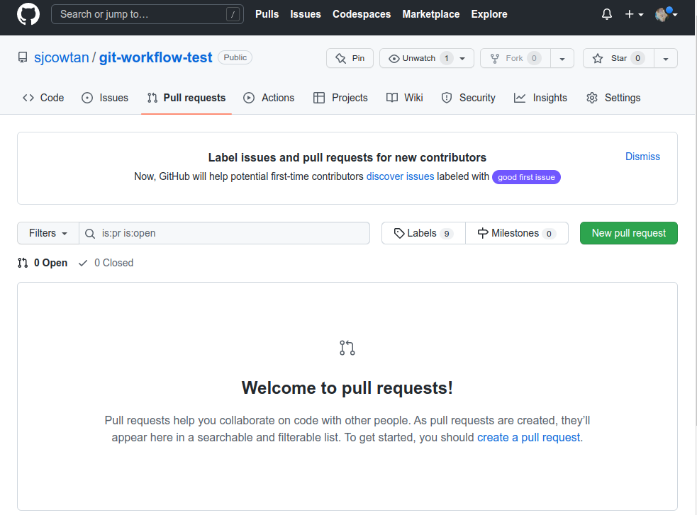
If previous pull requests have been created on your repo, they will appear in the box instead of “Welcome to pull requests!”
Click the green New pull request button. This will open a new page:
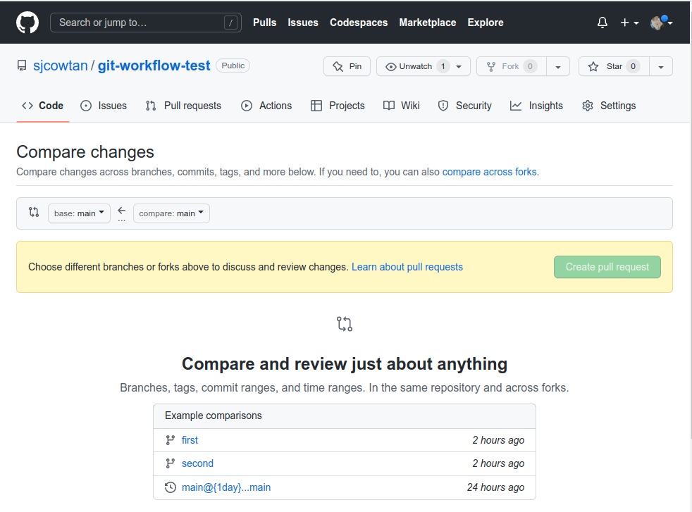
There are two buttons with pulldowns, one called base and one compare. Use the compare menu to select your branch.
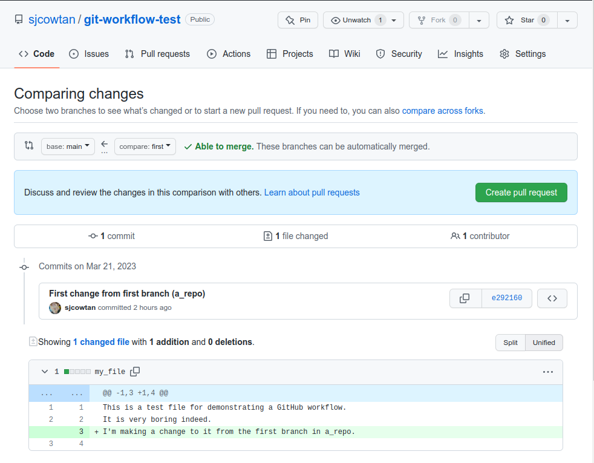
The box at the bottom of this page gives you another chance to review the output from git diff.
There is a green tick and “Able to merge” next to the branch buttons now. Don’t click it!. If there are no protections in place on the repository, as there are not for this example, this would directly perform the merge, whereas you need to check with our collaborators. Use the green Create pull request button instead.
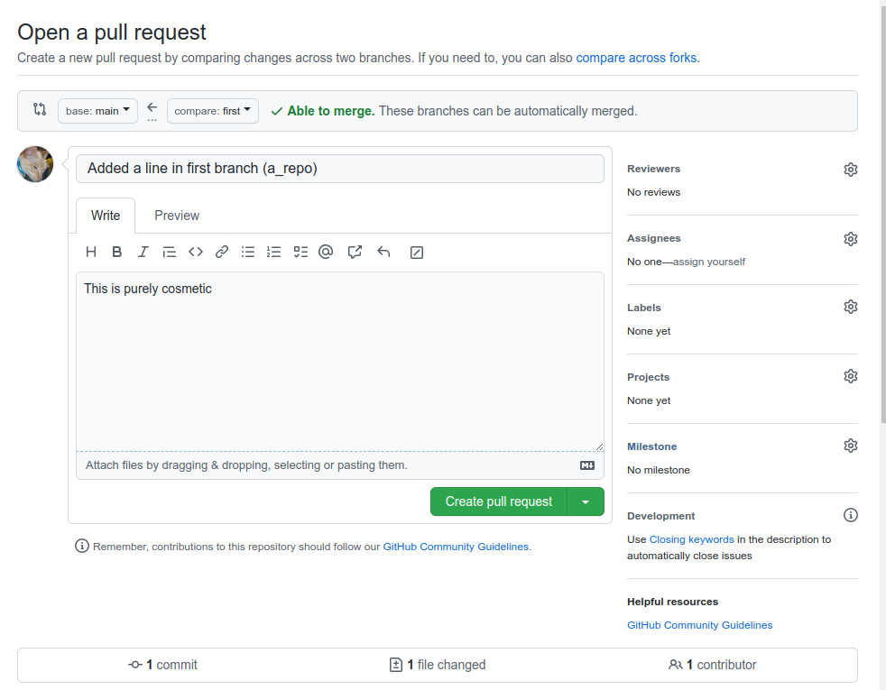
You are now at the page that the above URL would have taken you to! But if you had done that, you would have lost the chance to verify that the git diff output was still as you expected.
Put a short meaningful description of the changes or input required in the title section, and some more detail in the large box. If you have particular issues which you would like input on, this is the place to detail them.
Now click the Create pull request button.
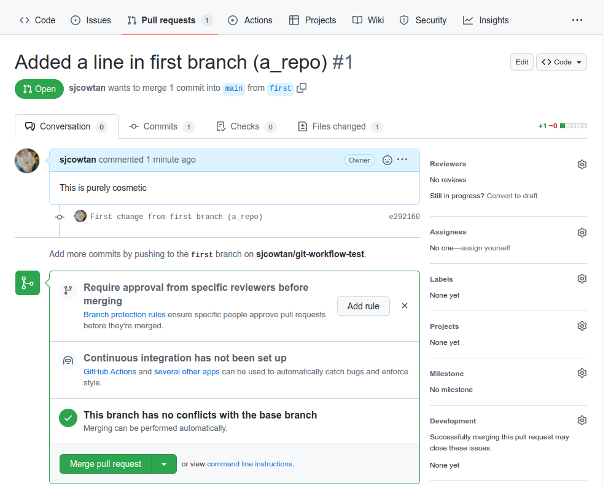
This is the page for you and your collaborators to work on this pull request. On the right hand side, there are a number of settings. If you want particular people to review your code, you can add them in the Reviewers section. Likewise you can use Assignees to indicate who is supposed to work on any issues raised (this can of course be you). Some of the Labels options can be useful as shortcuts to show why you’re asking for a review or what kind of changes you made; bug, documentation, enhancement, help wanted and question. If someone has opened an issue on the project and your code is designed to address it, this can be indicated in Development.
The green box indicates that there are branch protection rules which could have been added to this repository, but in this case were not, since they would have little effect on a test repository with only one contributer. They will be discussed further in Section 7.
If the branch protections suggested in Section 7.1 have been implemented, you will instead see:
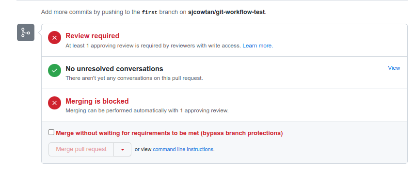
This enforces the need for a code review before merging a branch into main. I am the owner of this repository so I can override this, as could any designated administrators.
Note: There is a command git request-pull which sounds as though it would do the job. It doesn’t! This is designed for a mailing-list based workflow, and sends the list a summary of the pending changes.
6.2 Working with an open pull request
6.2.1 The conversation tab
At the bottom of the page for a pull request, there is a box to leave comments (not shown in Figure 1). You can also drag whole files into it. This is the way for reviewers and the assignee / pull requestor to exchange ideas and suggestions. Here I’ve made a suggestion:
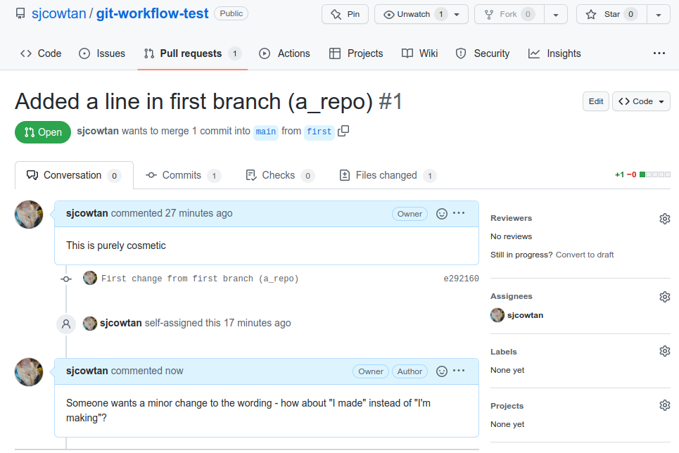
Note that I also assigned myself to respond to issues. I now make that change on my branch and push it to GitHub, and the pull request page now looks like:
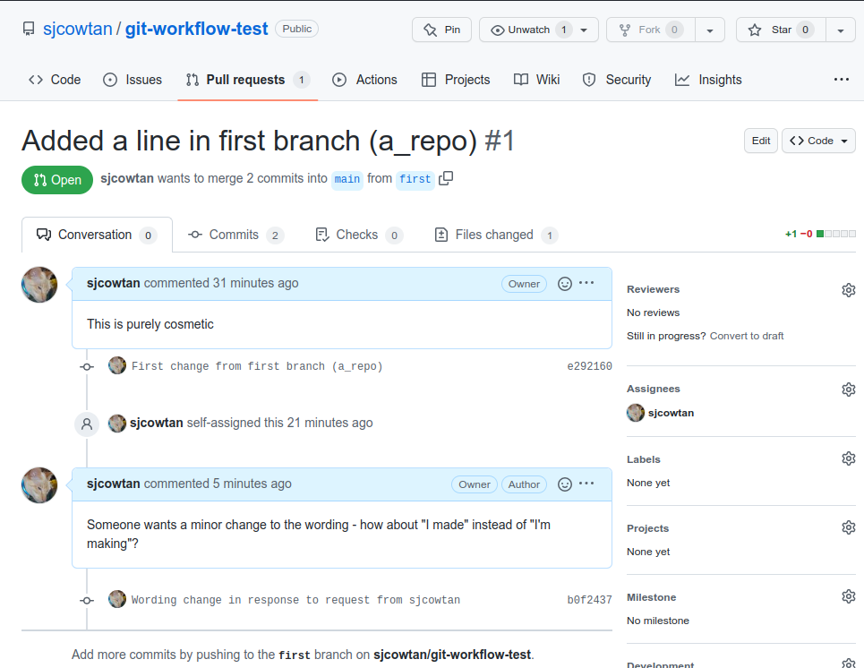
6.2.2 The commits tab
6.2.2.1 Viewing commits
To look at the commits associated with an open pull request, select the Commits tab.
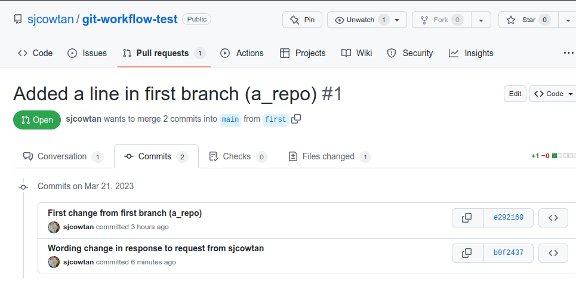
To look at a particular commit, click the blue commit ID:
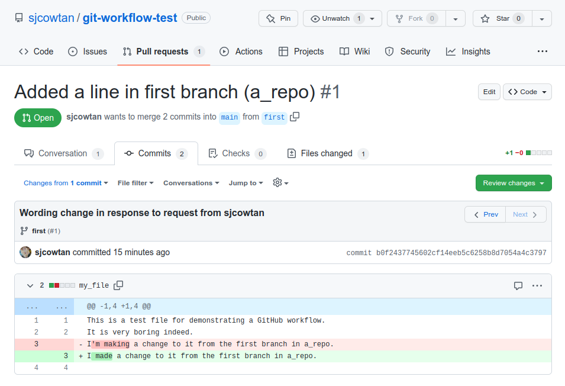
The changes are clearly highlighted between the two versions.
6.2.2.2 Reviewing code
As a code reviewer, you click on the green Review changes button on Figure 3 and a box opens to add your comments:
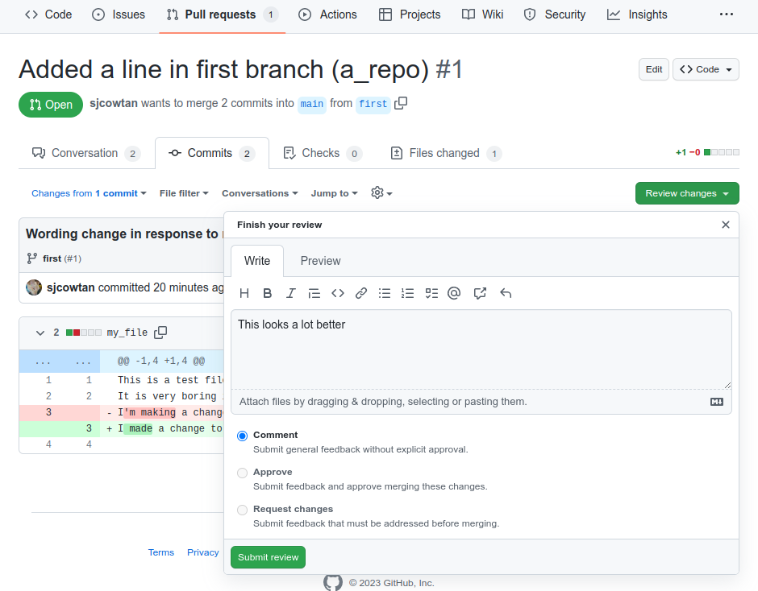
If you believe that the code is ready to be merged with the main branch and you are the owner or acting as the owner of the repository, you can select the Approve button when you make your feedback (but note that you can’t Approve your own pull request). Otherwise, you can indicate your approval with a Comment. These messages will also be visible in the Conversations tab.
If you think further work is essential, or the change needs to be scrapped, use Request changes (also not something you can do to your own pull request). It will not be possible to merge the code until you have agreed that these have been addressed.
If you have some useful input but do not think it is important enough to affect whether the code can be merged, use Comment.
In all cases, use the Submit review button when you’re done.
6.2.2.3 Overriding the need to approve
To prevent single points of failure, the owner or administrators of a repository can merge a request which has an outstanding request for changes, or one which has not been approved in review. More details on special cases are detailed in the tips box at the bottom of this GitHub documentation page.
6.2.2.4 Closing a pull request without merging
Below the comment box on the Conversation tab, there is a button which reads Close pull request if you have not entered a comment, and Close with comment if you have. This will cancel the pull request.
6.2.2.5 Merging an approved pull request
Once you have addressed all of the issues raised in conversation or formally flagged as requiring review on your pull request, and somebody has approved the final version, the repository owner should merge your branch (Section 7.2). At this stage you can pull the new version of main
git checkout main
git pull origin main
and then delete your local branch:
git branch -d my-task-name
This will give you a warning if it hasn’t actually been merged.
If the repository owner hasn’t deleted your branch from GitHub, you can do it with
git push origin :my-task-name
This helps to keep both your local repository and the central one clean. Your commit history is not lost because it is now part of the history of the main branch.
6.2.3 The files changed tab
This shows the number of commits and the differences between the most recently committed version of the branch code and the version in main. You can review changes from here, in the same way as for the Commits tab.
6.2.4 The checks tab
This is only used if you have enabled automated workflows such as code linting via GitHub actions.
7 For repository owners
7.1 Setting branch protection rules
To back up the workflow, you may wish to set branch protections on the main branch. Select Settings/Branches or use the Add rule button on the pull request view (Figure 1). Suggested settings are:
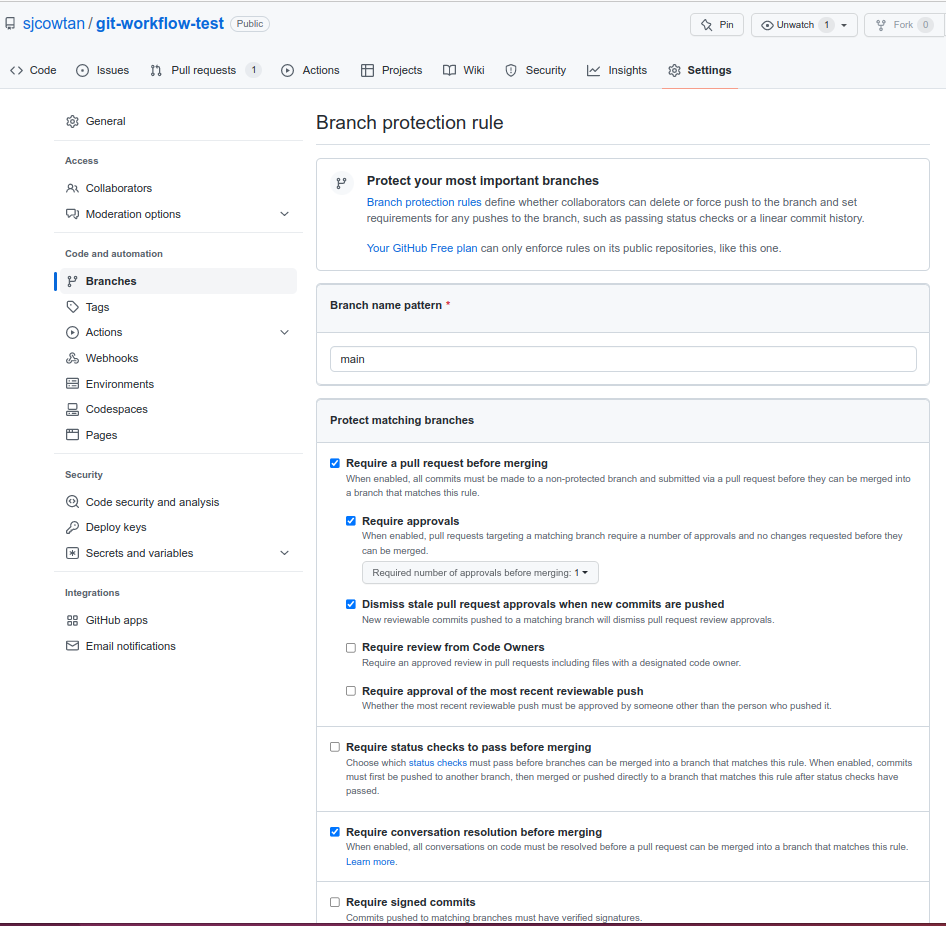
There are several more options below these but none are selected.
7.2 Merging an approved pull request
Once all the conversations about a pull request have been resolved and it has been approved, you can finally click that big green merge pull request button (Figure 1).
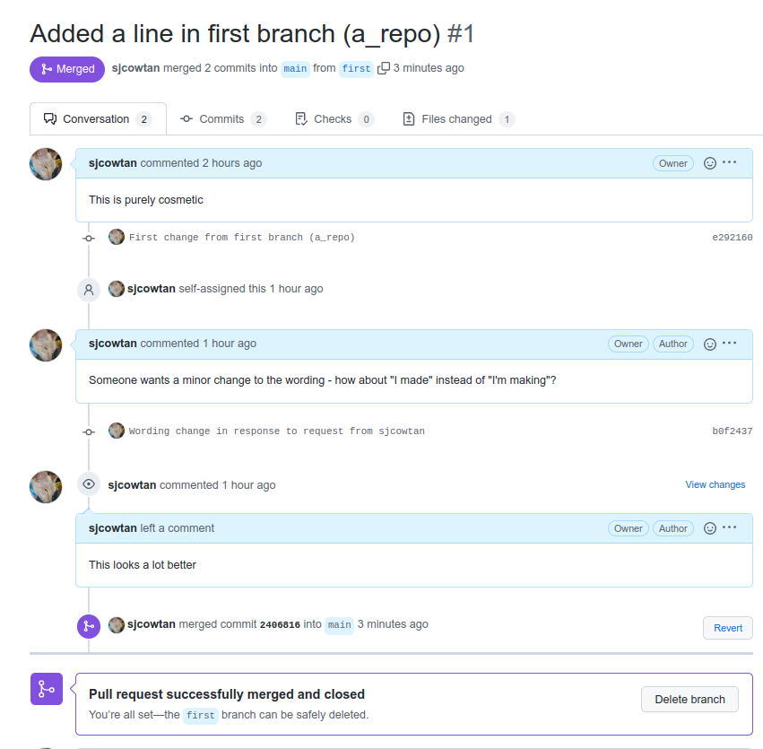
It then makes sense to delete the merged branch on the repository using the Delete branch button, to keep the repo tidy. The branch owner will have to delete their local copy themselves.
7.3 Overriding branch protection to merge
Sometimes the person who raised an issue about some code isn’t available to confirm it’s been solved. There may also be nobody available to do a code review for you. As the owner of the repository, you can override by checking the Merge without waiting for requirements checkbox in Figure 2. It will then ask you to confirm the merge.